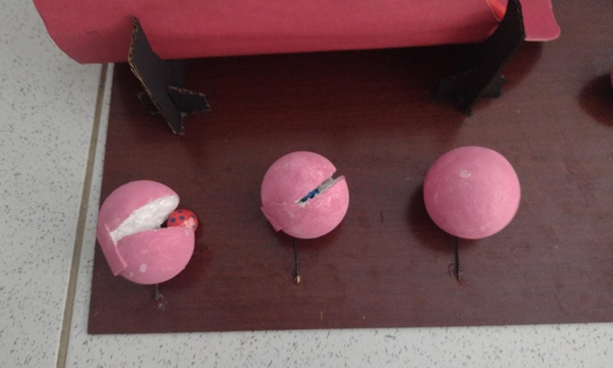

Algumas substâncias entram na célula através de transporte ativo e passivo, outras, no entanto, não são capazes de usar essa via de transporte. Nesses casos, elas podem ser englobadas pela célula em um processo conhecido como endocitose.
Um tipo de endocitose é a chamada fagocitose. Nesse processo, a célula captura uma partícula sólida, relativamente grande, através de prolongamentos citoplasmáticos chamados de pseudópodes. A partícula é então englobada e passa a integrar o citoplasma da célula. Nessa etapa, o material ingerido fica totalmente envolto por uma membrana, formando o chamado fagossomo.
No interior do fagossomo são lançadas enzimas que degradam a partícula ingerida, que pode ser um micro-organismo ou até mesmo restos celulares. Essas enzimas são liberadas por organelas chamadas de lisossomos, que se unem ao fagossomo formando um vacúolo digestivo. O material que não é digerido recebe o nome de corpos residuais, que, depois de algum tempo, podem ser excretados pela célula.
Ilustração do processo de fagocitose
Assista o vídeo abaixo para entender um pouco mais do assunto:
* VIDEO AQUI *